Hazel 游戏引擎笔记 033：渲染流程与提交
本节来源：The Cherno 游戏引擎系列第 33 讲“渲染流程与提交”，时长约 36 分 29 秒。
原课程与 Hazel 代码作者：The Cherno。代码参考提交：dc9e382。
本文由视频字幕重构、翻译并整理，不是官方教材；术语和代码以原视频及同期 Hazel 仓库为准。
本节目标
第 32 讲已经把顶点数组、顶点缓冲和索引缓冲封装起来，但 Application::Run() 中仍留着最后一条 OpenGL 专用代码：
glDrawElements(
GL_TRIANGLES,
vertexArray->GetIndexBuffer()->GetCount(),
GL_UNSIGNED_INT,
nullptr);
这正是实际提交给 GPU 的 Draw Call。只要它还直接写在应用层，渲染后端就没有真正隐藏。
本讲建立三层渲染架构：
Renderer：高层场景与对象提交流程；RenderCommand：静态、原子化的底层命令入口；RendererAPI：每个图形 API 的具体后端接口。
本讲完成的内容：
- 解释 Draw Call 实际做什么；
- 区分场景级数据与对象级数据；
- 设计
BeginScene、Submit、EndScene流程； - 讨论未来命令队列、延迟提交和可见性优化；
- 建立
RendererAPI接口与 API 枚举； - 建立
RenderCommand静态转发层； - 实现
OpenGLRendererAPI； - 用
Renderer::Submit()绑定 VAO 并发出 Draw Call； - 把 Application 的清屏和绘制改成 Hazel 通用接口；
- 修复首次重构时遗漏的 VAO 绑定；
- 从 Application 中彻底移除 Glad；
- 明确下一阶段的 Camera、Transform 和 Material。
graph TD
A[Application / Game] --> B[Renderer]
B --> C[RenderCommand]
C --> D[RendererAPI]
D --> E[OpenGLRendererAPI]
E --> F[OpenGL Driver]
📷 重构前 Application 中只剩最后一条 glDrawElements
回到原视频 (00:00:21)
1. Draw Call 是真正的提交动作
(参考时间: 00:00:26)
渲染前需要准备大量状态：
- 绑定 Shader；
- 绑定纹理和材质参数；
- 绑定 Vertex Array；
- 配置顶点属性和索引缓冲；
- 上传 uniforms；
- 决定要绘制多少索引。
Draw Call 是最终把“已经准备好的状态”交给 GPU 执行的命令。GPU 按当前状态运行 Vertex Shader，完成图元装配、光栅化，再运行 Fragment Shader 得到像素颜色。
在 OpenGL 中，本讲对应的调用是 glDrawElements()。DirectX 等后端也会有自己的等价提交命令。抽象层的目标，是让上层只说“绘制这个 Vertex Array”，而不关心底层函数名。
sequenceDiagram
participant App
participant Renderer
participant Backend
participant GPU
App->>Renderer: Submit(vertexArray)
Renderer->>Backend: DrawIndexed(vertexArray)
Backend->>GPU: Draw command
GPU->>GPU: Vertex / primitive / fragment
2. 渲染一个物体至少需要什么
(参考时间: 00:03:25)
把一个立方体画到 3D 世界中，需要两个层面的数据。
2.1 场景级数据
- 相机位置与朝向；
- View 矩阵；
- Projection 矩阵；
- 灯光；
- 环境贴图或环境光照；
- 天空盒和全局渲染设置。
这些信息在渲染一个场景中的所有对象时通常保持一致。
2.2 对象级数据
- 几何形状；
- Shader / Material；
- 世界变换矩阵；
- 法线、纹理坐标和骨骼数据；
- 物件特有的渲染参数。
当前 Hazel 只有 Vertex Array 和 Shader。相机、材质、灯光、环境贴图和变换系统都尚未实现，但本讲先把它们未来所在的位置确定下来。
graph TD
A[Scene] --> B[Camera]
A --> C[Environment / Lights]
A --> D[Objects]
D --> E[Vertex Array]
D --> F[Shader / Material]
D --> G[Transform]
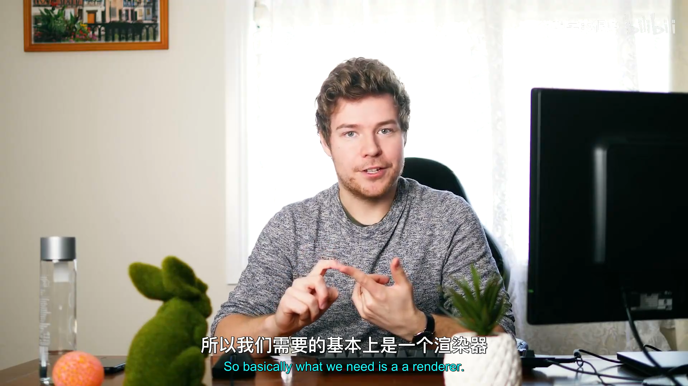
📷 渲染场景由相机、环境与多个对象共同组成
回到原视频 (00:03:26)
3. BeginScene / Submit / EndScene
(参考时间: 00:06:04)
讲师把一次渲染组织成三个高层阶段：
Renderer::BeginScene(sceneData);
shader->Bind();
Renderer::Submit(vertexArray);
Renderer::EndScene();
BeginScene() 接收所有“整个场景共享”的参数。以后它会把相机矩阵、灯光和环境信息放入当前场景状态。
Submit() 接收每个待绘制对象。以后它还会接收变换矩阵和材质，并把这些对象级数据与当前场景组合起来。
EndScene() 表示场景提交结束。未来它可以触发命令队列刷新，让渲染线程执行已经收集的命令。
sequenceDiagram
participant App
participant R as Renderer
App->>R: BeginScene(sceneData)
loop 每个对象
App->>R: Submit(object, transform, material)
end
App->>R: EndScene()
R->>R: Flush command queue
📷 Renderer 将一帧拆成 BeginScene、对象提交与 EndScene
回到原视频 (00:08:30)
4. 当前采用立即提交
(参考时间: 00:09:02)
成熟渲染器通常不会在 Submit() 中立即调用 GPU，而是把绘制请求写入 Render Command Queue：
- 收集完整场景；
- 执行视锥裁剪；
- 合并材质相同或状态相同的对象；
- 对绘制顺序排序；
- 在线程安全的命令队列中统一执行；
- 可以在独立渲染线程中消费。
这些优化只有拿到整个场景后才有意义。如果每提交一个对象就立刻绘制，就无法提前知道后面的对象、灯光和材质分布。
不过当前阶段没有相机、裁剪器、材质系统或 Render Graph。讲师选择先做最直接的立即模式：
Submit -> Bind Vertex Array -> DrawIndexed
未来再把中间实现替换为命令队列，同时保持上层 API 形态。
flowchart TD
A[当前立即提交] --> B[Bind]
B --> C[Draw]
D[未来延迟提交] --> E[写入 Command Queue]
E --> F[排序 / 合批 / 裁剪]
F --> G[渲染线程执行]
📷 当前先直接绘制，未来再引入命令队列和渲染线程
回到原视频 (00:09:04)
5. 重构前的 Run 循环
(参考时间: 00:10:58)
Application 原本直接完成：
glClearColor(0.1f, 0.1f, 0.1f, 1);
glClear(GL_COLOR_BUFFER_BIT);
m_BlueShader->Bind();
m_SquareVA->Bind();
glDrawElements(...);
m_Shader->Bind();
m_VertexArray->Bind();
glDrawElements(...);
本讲希望把这段改写成：
RenderCommand::SetClearColor({ 0.1f, 0.1f, 0.1f, 1 });
RenderCommand::Clear();
Renderer::BeginScene();
m_BlueShader->Bind();
Renderer::Submit(m_SquareVA);
m_Shader->Bind();
Renderer::Submit(m_VertexArray);
Renderer::EndScene();
这一改动把“应用要画什么”与“OpenGL 怎样画”分开。
graph LR
A[原来的 Application] --> B[raw GL]
C[重构后的 Application] --> D[RenderCommand]
C --> E[Renderer]
D --> F[RendererAPI]
E --> D
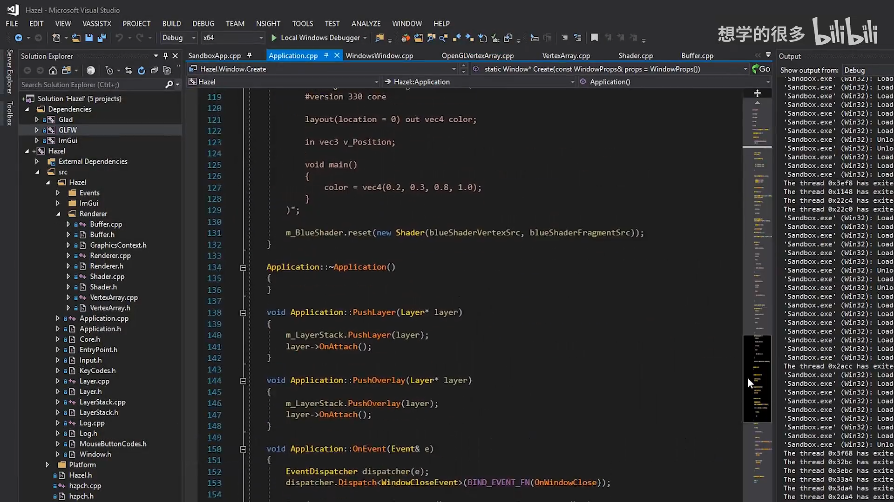
📷 目标 API 让 Application 不再直接接触 OpenGL
回到原视频 (00:11:09)
6. Renderer 与 RendererAPI 的职责差异
(参考时间: 00:14:09)
Renderer 是高层对象：
- 理解 Scene；
- 接收几何与材质；
- 绑定对象状态；
- 组合场景级与对象级参数；
- 未来负责队列、排序和批处理。
清屏、Draw Call 这类具体操作位于 Renderer 之下。讲师把这一层称为 Render Command，把真正的图形 API 后端称为 Renderer API。
命名也经过讨论。RenderAPI 虽然更短，但不够明确；RendererAPI 更清楚地表示“Renderer 所使用的图形 API”。
graph TD
A[Renderer: 高层概念] --> B[RenderCommand: 原子操作]
B --> C[RendererAPI: 后端抽象]
C --> D[OpenGL / DirectX / Vulkan]
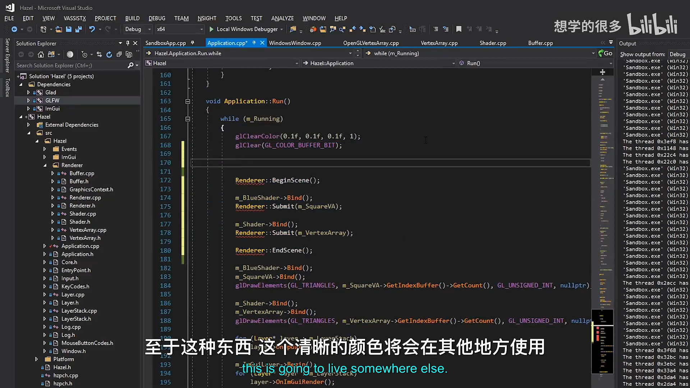
📷 Renderer、RenderCommand 与 RendererAPI 形成三层职责分离
回到原视频 (00:14:13)
7. RendererAPI 接口
(参考时间: 00:16:04)
新增 RendererAPI.h：
#pragma once
#include <glm/glm.hpp>
#include "VertexArray.h"
namespace Hazel {
class RendererAPI
{
public:
enum class API
{
None = 0,
OpenGL = 1
};
virtual void SetClearColor(const glm::vec4& color) = 0;
virtual void Clear() = 0;
virtual void DrawIndexed(
const std::shared_ptr<VertexArray>& vertexArray) = 0;
inline static API GetAPI()
{
return s_API;
}
private:
static API s_API;
};
}
接口直接使用 GLM 的 vec4 表示颜色。数学库不是渲染后端，颜色参数也不会迫使接口暴露 OpenGL 类型。
DrawIndexed() 取名参考 DirectX，而不是照搬 OpenGL 的 DrawElements()。上层使用 Hazel 的 Index Buffer 概念，因此“绘制索引数据”是更中立的名称。
classDiagram
class RendererAPI {
<<interface>>
+SetClearColor(glm::vec4) = 0
+Clear() = 0
+DrawIndexed(VertexArray) = 0
+GetAPI() API
}
class OpenGLRendererAPI
RendererAPI <|-- OpenGLRendererAPI
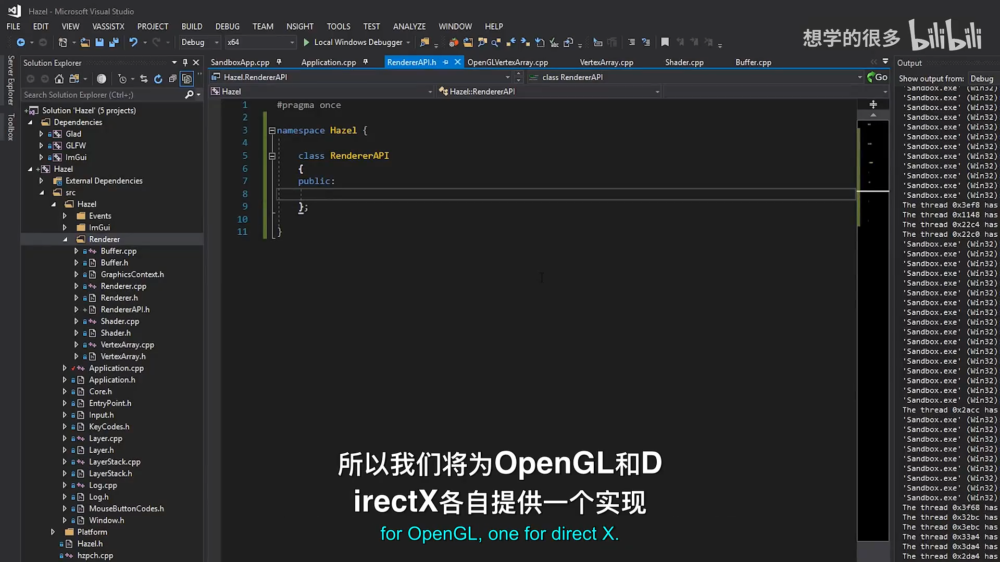
📷 RendererAPI 接口只暴露清屏和索引绘制等后端操作
回到原视频 (00:16:13)
8. API 枚举与当前后端
(参考时间: 00:18:21)
RendererAPI.cpp 暂时把当前后端设为 OpenGL：
#include "hzpch.h"
#include "RendererAPI.h"
namespace Hazel {
RendererAPI::API RendererAPI::s_API =
RendererAPI::API::OpenGL;
}
这里保存的是“当前选择哪一种后端”的枚举，不是后端对象本身。后端对象由更底层的 RenderCommand 持有。
未来窗口和 Graphics Context 创建时可以决定实际 API，再实例化相应的 RendererAPI 实现。当前先固定 OpenGL。
stateDiagram-v2
[*] --> SelectAPI
SelectAPI --> CreateContext
CreateContext --> CreateRendererAPI
CreateRendererAPI --> IssueCommands
IssueCommands --> FramePresented
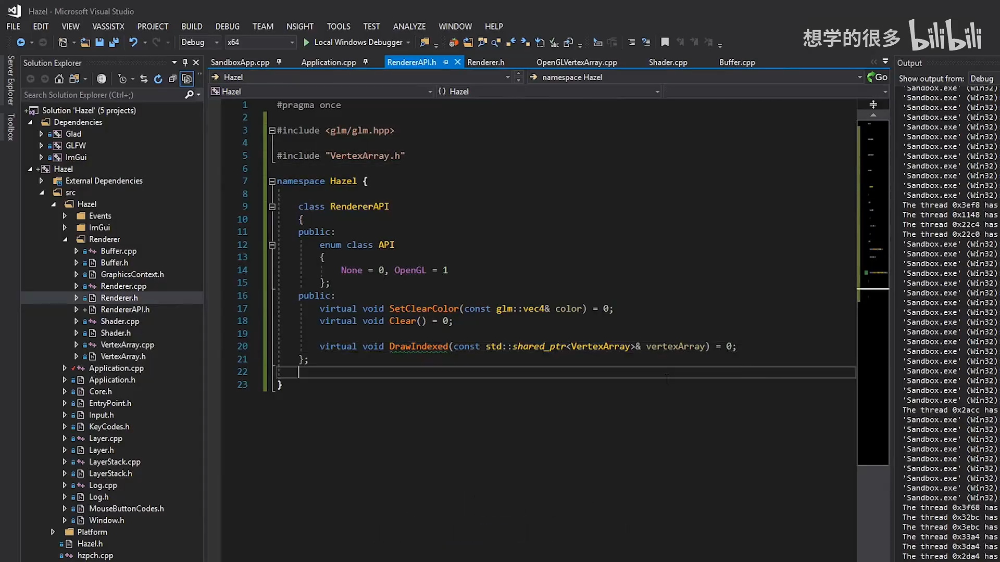
📷 RendererAPI 保存当前图形 API 枚举，渲染线程通过具体对象执行命令
回到原视频 (00:18:21)
9. RenderCommand 是静态转发层
(参考时间: 00:19:40)
RenderCommand.h 不包含渲染策略，只把调用转发给当前后端：
#pragma once
#include "RendererAPI.h"
namespace Hazel {
class RenderCommand
{
public:
inline static void SetClearColor(const glm::vec4& color)
{
s_RendererAPI->SetClearColor(color);
}
inline static void Clear()
{
s_RendererAPI->Clear();
}
inline static void DrawIndexed(
const std::shared_ptr<VertexArray>& vertexArray)
{
s_RendererAPI->DrawIndexed(vertexArray);
}
private:
static RendererAPI* s_RendererAPI;
};
}
每个函数只做一件事：
SetClearColor()设置颜色；Clear()清屏；DrawIndexed()提交一次索引绘制。
它们不绑定 Shader、不绑定 Vertex Array、不排序，也不处理材质。绑定等准备动作属于高层 Renderer。
sequenceDiagram
participant R as Renderer
participant RC as RenderCommand
participant API as OpenGLRendererAPI
R->>RC: DrawIndexed(vertexArray)
RC->>API: DrawIndexed(vertexArray)
API->>API: glDrawElements
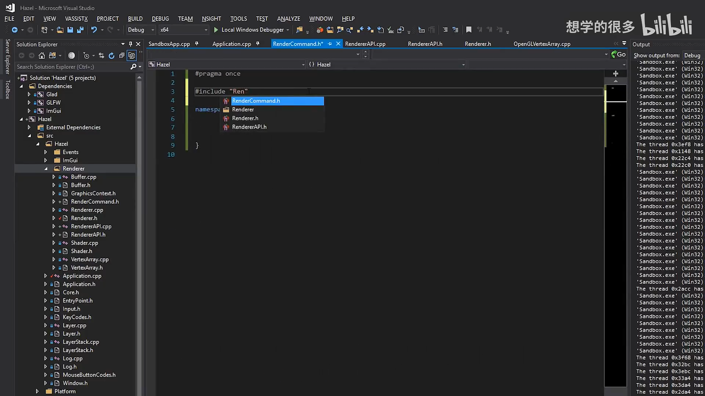
📷 RenderCommand 是静态、内联的原子命令包装层
回到原视频 (00:20:16)
10. 创建当前 RendererAPI 实现
(参考时间: 00:24:43)
RenderCommand.cpp 创建 OpenGL 实现：
#include "hzpch.h"
#include "RenderCommand.h"
#include "Platform/OpenGL/OpenGLRendererAPI.h"
namespace Hazel {
RendererAPI* RenderCommand::s_RendererAPI =
new OpenGLRendererAPI;
}
这是一段临时实现：
- 后端对象从应用启动存活到退出；
- 当前没有动态工厂；
- 没有在析构中删除，但对象没有成员，生命周期与进程相同；
- 后续会由图形 Context 或渲染初始化逻辑选择实际实现。
flowchart TD
A[RenderCommand::s_RendererAPI] --> B[new OpenGLRendererAPI]
B --> C[SetClearColor]
B --> D[Clear]
B --> E[DrawIndexed]
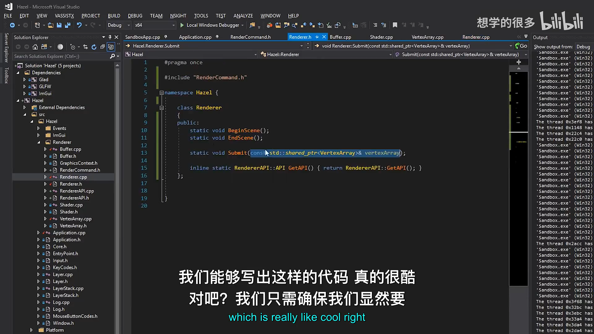
📷 RenderCommand 暂时固定持有一个 OpenGLRendererAPI 实例
回到原视频 (00:24:43)
11. OpenGLRendererAPI 头文件
(参考时间: 00:25:51)
平台实现继承通用接口：
#pragma once
#include "Hazel/Renderer/RendererAPI.h"
namespace Hazel {
class OpenGLRendererAPI : public RendererAPI
{
public:
virtual void SetClearColor(
const glm::vec4& color) override;
virtual void Clear() override;
virtual void DrawIndexed(
const std::shared_ptr<VertexArray>& vertexArray) override;
};
}
该文件位于 Platform/OpenGL。除这里和 OpenGL Buffer、Vertex Array 等平台文件外，上层不再需要包含 Glad。
classDiagram
class RendererAPI {
<<interface>>
}
class OpenGLRendererAPI {
+SetClearColor()
+Clear()
+DrawIndexed()
}
RendererAPI <|-- OpenGLRendererAPI
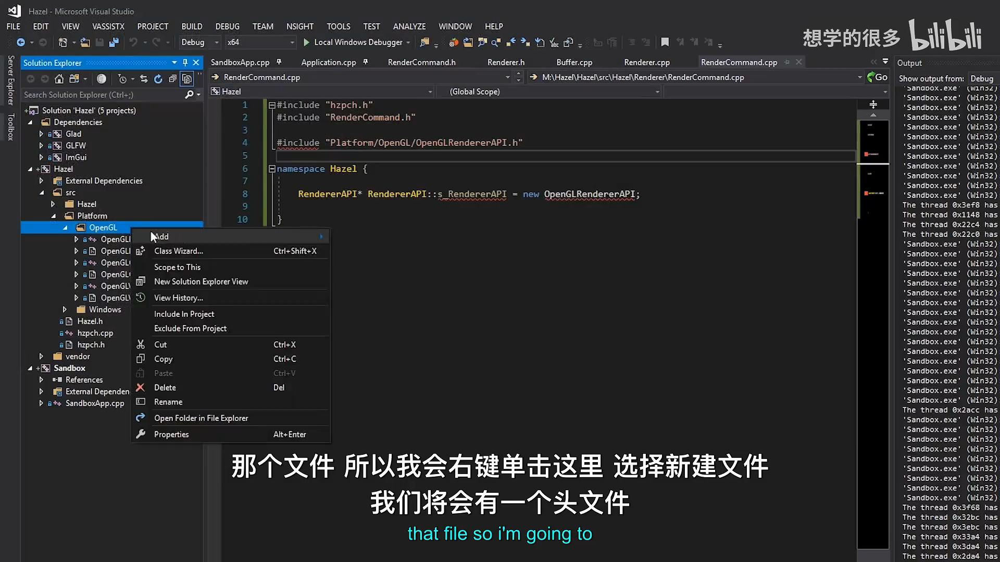
📷 OpenGLRendererAPI 头文件只暴露通用 RendererAPI 覆盖
回到原视频 (00:25:51)
12. 清屏与 DrawIndexed 实现
(参考时间: 00:27:13)
OpenGLRendererAPI.cpp 包含 Glad，并实现原始调用：
#include "hzpch.h"
#include "OpenGLRendererAPI.h"
#include <glad/glad.h>
namespace Hazel {
void OpenGLRendererAPI::SetClearColor(
const glm::vec4& color)
{
glClearColor(color.r, color.g, color.b, color.a);
}
void OpenGLRendererAPI::Clear()
{
glClear(GL_COLOR_BUFFER_BIT | GL_DEPTH_BUFFER_BIT);
}
void OpenGLRendererAPI::DrawIndexed(
const std::shared_ptr<VertexArray>& vertexArray)
{
glDrawElements(
GL_TRIANGLES,
vertexArray->GetIndexBuffer()->GetCount(),
GL_UNSIGNED_INT,
nullptr);
}
}
Clear 当前同时清除颜色和深度缓冲。未来可能需要传入 flags，只清除指定附件；Frame Buffer 也可能直接调用类似命令。
DrawIndexed 当前固定绘制三角形、索引类型固定为 uint32_t。以后需要支持点、线、三角形条带和不同索引类型。
flowchart LR
A[RendererAPI command] --> B{命令类型}
B -- Clear Color --> C[glClearColor]
B -- Clear --> D[glClear]
B -- Draw Indexed --> E[glDrawElements]
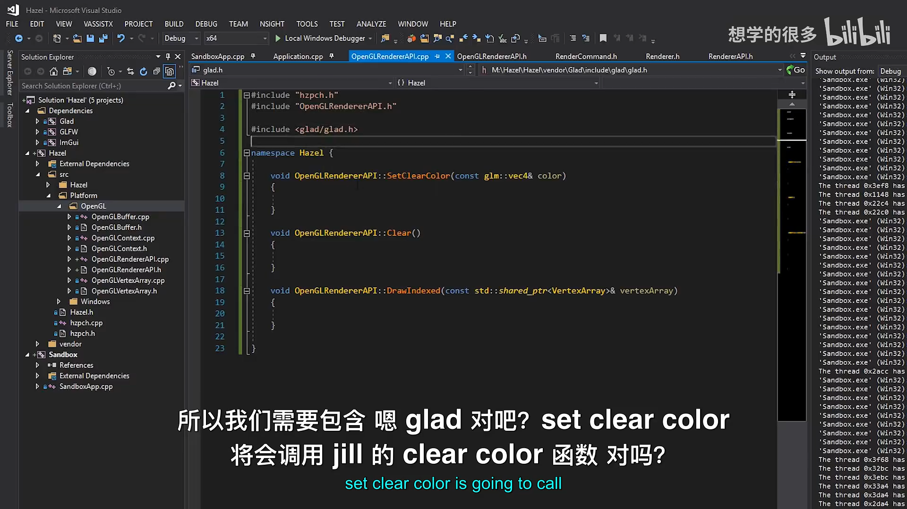
📷 OpenGLRendererAPI 把通用命令转换为 Glad/OpenGL 调用
回到原视频 (00:27:22)
13. Renderer 高层接口
(参考时间: 00:21:12)
Renderer.h 只公开场景级操作：
#pragma once
#include "RenderCommand.h"
namespace Hazel {
class Renderer
{
public:
static void BeginScene();
static void EndScene();
static void Submit(
const std::shared_ptr<VertexArray>& vertexArray);
inline static RendererAPI::API GetAPI()
{
return RendererAPI::GetAPI();
}
};
}
GetAPI() 仍然有用：引擎调试面板或平台特定代码可能需要知道当前使用的是 OpenGL 还是 DirectX。它只是查询枚举，不会暴露底层 API 对象。
classDiagram
class Renderer {
+BeginScene()
+EndScene()
+Submit(shared_ptr~VertexArray~)
+GetAPI() RendererAPI::API
}
Renderer ..> RenderCommand
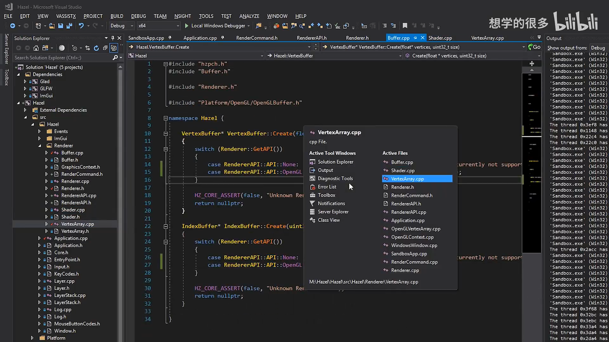
📷 Renderer 只保留场景、提交和 API 查询等高层能力
回到原视频 (00:21:12)
14. Submit 必须绑定 Vertex Array
(参考时间: 00:32:17)
最初 Renderer::Submit() 直接调用 DrawIndexed，忘记绑定 VAO，导致画面上没有预期对象。
正确实现是：
void Renderer::Submit(
const std::shared_ptr<VertexArray>& vertexArray)
{
vertexArray->Bind();
RenderCommand::DrawIndexed(vertexArray);
}
这里体现了职责边界：
- Renderer 负责准备绘制所需的绑定状态；
- RenderCommand 只发出单个原子操作；
- RenderCommand 不应该偷偷绑定 VAO，否则名字叫 DrawIndexed 的命令实际做了两件事。
sequenceDiagram
participant R as Renderer::Submit
participant VA as VertexArray
participant RC as RenderCommand
participant GL as OpenGLRendererAPI
R->>VA: Bind()
R->>RC: DrawIndexed(VA)
RC->>GL: DrawIndexed(VA)
GL->>GL: glDrawElements
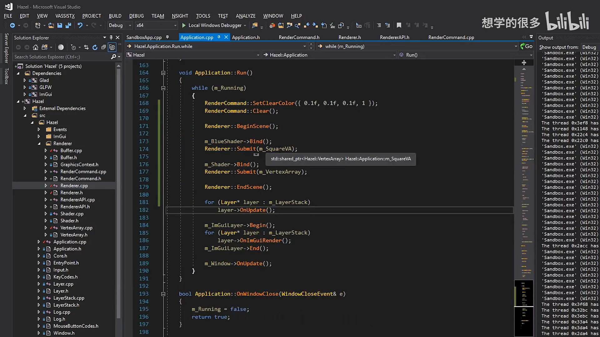
📷 Submit 负责绑定 VAO，RenderCommand 只执行绘制命令
回到原视频 (00:32:19)
15. BeginScene 与 EndScene 暂时为空
(参考时间: 00:22:26)
Renderer.cpp 当前实现：
void Renderer::BeginScene()
{
}
void Renderer::EndScene()
{
}
void Renderer::Submit(
const std::shared_ptr<VertexArray>& vertexArray)
{
vertexArray->Bind();
RenderCommand::DrawIndexed(vertexArray);
}
BeginScene 未来会接收相机和环境参数，保存当前场景状态，并确保后续材质得到正确的 Shader uniforms。
EndScene 未来会结束命令收集，刷新命令队列，或者通知渲染线程执行本帧。
现在留空是明确的阶段性选择，而不是遗漏。它们为后续架构保留了稳定调用点。
flowchart TD
A[BeginScene] --> B[保存 Camera / Environment]
B --> C[Submit objects]
C --> D[绑定 VAO]
D --> E[写入或执行 Draw]
E --> F[EndScene]
F --> G[Flush future queue]
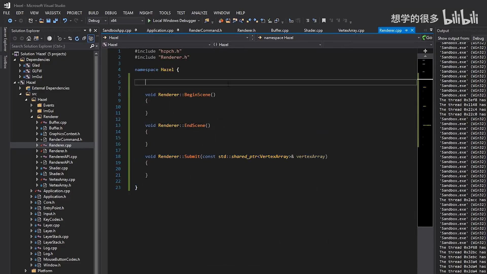
📷 BeginScene 与 EndScene 当前为空，但承担未来场景状态边界
回到原视频 (00:22:26)
16. Application 改用 Renderer 流程
(参考时间: 00:30:43)
Application 删除 Glad 和裸绘制代码，引入：
#include "Hazel/Renderer/Renderer.h"
Run 循环变成：
RenderCommand::SetClearColor({ 0.1f, 0.1f, 0.1f, 1 });
RenderCommand::Clear();
Renderer::BeginScene();
m_BlueShader->Bind();
Renderer::Submit(m_SquareVA);
m_Shader->Bind();
Renderer::Submit(m_VertexArray);
Renderer::EndScene();
Shader 仍然由应用绑定，因为 Material 系统还没有建立。未来 Mesh 会持有 Material，Material 会选择 Shader 和 uniforms，Renderer 再统一处理这些对象级状态。
sequenceDiagram
participant App
participant RC as RenderCommand
participant R as Renderer
participant S as Shader
App->>RC: SetClearColor + Clear
App->>R: BeginScene
App->>S: Bind BlueShader
App->>R: Submit SquareVA
App->>S: Bind Triangle Shader
App->>R: Submit TriangleVA
App->>R: EndScene
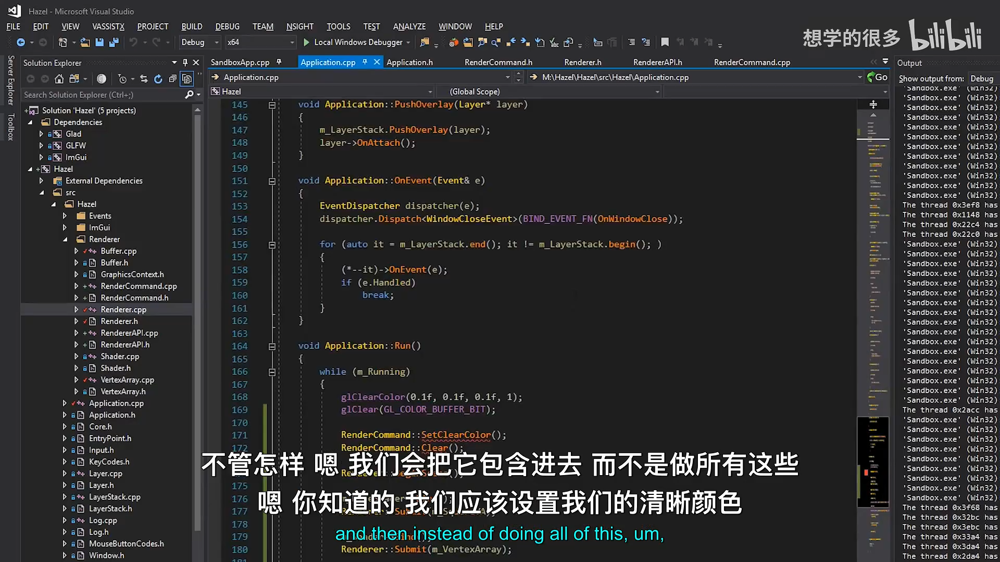
📷 Application 通过 RenderCommand 清屏，并通过 Renderer 提交两个 VAO
回到原视频 (00:30:43)
17. 结果保持一致且不再依赖 Glad
(参考时间: 00:33:06)
修复 VAO 绑定后，运行结果与上一讲完全相同：蓝色方块和渐变三角形正常显示。
随后讲师从 Application 中移除：
#include <glad/glad.h>
只编译 Hazel 渲染库就能通过。Application 不再看到：
glClearColorglClearglBindVertexArrayglDrawElementsGL_TRIANGLESGL_UNSIGNED_INT
所有 OpenGL 细节都被限制在平台实现中。
flowchart LR
A[Application] --> B[Renderer / RenderCommand]
B --> C[RendererAPI]
C --> D[OpenGLRendererAPI]
D --> E[Glad]
A -. 无直接依赖 .-> E
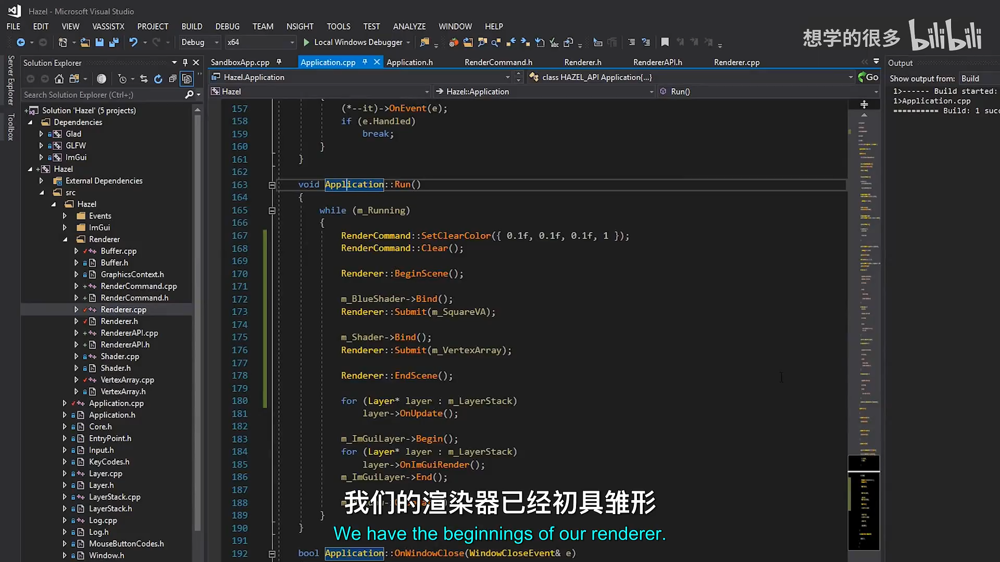
📷 Application 完全移除 Glad 后仍能绘制相同画面
回到原视频 (00:34:05)
18. OpenGLRendererAPI 的边界
(参考时间: 00:28:08)
当前 OpenGL 后端刻意保持简单：
- 清屏固定同时清除颜色和深度；
- DrawIndexed 固定绘制
GL_TRIANGLES； - 索引类型固定为
GL_UNSIGNED_INT； - 不设置 primitive mode；
- 不处理 viewport；
- 不处理混合、深度测试和面剔除；
- 不管理 Frame Buffer。
这些限制不是长期接口，而是当前渲染器还没有处理对应状态。让命令保持最小化，可以让后续扩展点时更清楚每一次 API 增长是为了哪种能力。
mindmap
root((OpenGLRendererAPI))
Clear
Color
Depth
Future flags
DrawIndexed
Triangles
uint32 indices
Future primitive type
Future state
Blend
Depth test
Cull face
Viewport
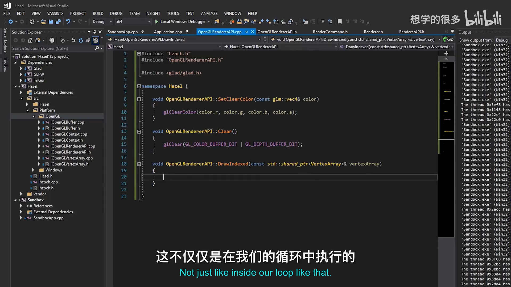
📷 OpenGLRendererAPI 当前只实现最小 Clear 与 DrawIndexed 命令
回到原视频 (00:28:08)
19. 命令队列与多线程渲染
(参考时间: 00:35:50)
真正的 Render Command Queue 会把命令保存下来，由渲染线程在合适的时间执行。好处包括：
- 将场景提交与 GPU 提交解耦；
- 在完整场景上执行视锥裁剪；
- 按材质和渲染状态合批；
- 调整透明物体与不透明物体的顺序；
- 构建跨线程安全的任务结构；
- 降低主线程阻塞。
当前还没有真实 3D 场景，多线程和队列不会成为瓶颈。过早引入只会让代码更复杂。现阶段先把高层 API 形态固定下来，未来替换内部执行机制。
flowchart TD
A[Game Thread] --> B[Submit object]
B --> C[Command Queue]
C --> D[Sort / Cull / Batch]
D --> E[Render Thread]
E --> F[GPU Commands]
📷 未来命令队列负责延迟提交、排序、裁剪与跨线程执行
回到原视频 (00:35:50)
20. 下一阶段：Camera、Transform 与 Material
(参考时间: 00:34:41)
渲染器已经能发出 Draw Call，但还缺少 3D 场景的关键输入：
- Camera：提供 View 与 Projection；
- Transform：把对象放到世界中的位置、旋转和缩放到 Shader；
- Material：选择 Shader 并上传对象级参数；
- Mesh：把 Vertex Array、Material 与 Transform 组织在一起；
- Environment：灯光与环境贴图；
- Renderer scene state：保存 BeginScene 传入的共享参数。
讲师计划先引入相机，让场景可以在 3D 空间中观察；随后处理变换矩阵和材质，使对象能以不同位置、姿态和外观提交到 Renderer。
graph TD
A[Camera] --> E[Scene State]
B[Environment] --> E
C[Mesh] --> D[Material]
C --> F[VertexArray]
C --> G[Transform]
E --> H[Renderer]
D --> H
F --> H
G --> H
H --> I[RenderCommand]
📷 下一步补齐 Camera、Transform、Material 与 Mesh
回到原视频 (00:34:41)
21. 本节结论
本讲完成了 Hazel 渲染架构的第一个稳定分层：
- Draw Call 从 Application 移入 OpenGL 后端；
- 明确场景级数据与对象级数据的区别；
- 建立
Renderer::BeginScene()、Submit()、EndScene()； - 建立
RendererAPI接口与 API 枚举； - 建立
RenderCommand静态命令转发层； - 实现
OpenGLRendererAPI； - 用 OpenGLRendererAPI 封装清屏和
glDrawElements； - Submit 负责绑定 VAO，命令本身保持原子化；
- Application 改用通用 Renderer 流程；
- 修复遗漏 VAO 绑定导致的不显示问题；
- 从 Application 中移除 Glad；
- 保持画面与上一讲完全一致；
- 明确未来的命令队列、相机、材质与变换方向。
这版 Renderer 仍然简单，但职责边界已经清晰：Renderer 决定“怎样准备一次绘制”，RenderCommand 表达“要执行什么原子操作”，RendererAPI 决定“当前平台怎样实际完成”。